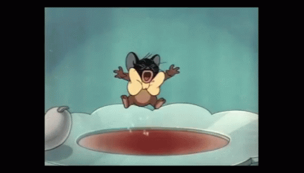

I think 7-in-7 is a great practice for me to arrange my ideas and actually present some of them at short notice. I do have a lot of ideas each day, sometimes I write them down, but without the chase of a deadline, I never put those ideas into practice or translate them into artworks. In past seven days, I was really involved in artistic creation, every day I was seriously thinking about what I should present on my portfolio. Doing 7 in 7 project is like dancing every day, but under constraint.
Me doing 7 in 7, trying to create something in 24 hours
Basically, I don’t have a certain direction in the works, like I wrote in my personal statement, I’m a person driven by my interest, my works are mostly motivated by my sudden ideas. When this project started, I used to have a grandiose plan to put all these seven works into one series, but after pondering for hours, I couldn’t choose a proper topic for my series. I’m pretty stubborn on the major topic while creating long-term works, so I changed the plan and set up a new rule for myself which is quite anti-series, to create completely different works every day. Under this rule, there came installation, audio, article, video and even ridiculous invention.
About my first, second and seventh projects, I didn’t think too much, I just created them for fun (especially the seventh project, the ancient Slack). I have never been a good writer, but I enjoy reading itself very much, so I created a literature Frankenstein, which is the 10x10x10 project. This kind of creative method based on randomness is actually more suitable for computer coding stuff. If I’m going to further complete this work (probably not), I may try to write a program based on this logic to generate more "nonsense" with algorithms. My second work, the audio is just pure emotional output, without any deeper meaning. I do have consolidated interests in music, but my limited music knowledge makes it very hard for me to create the so-called music with wonderful riff and melody. I seem to be composing music, but in fact I was playing software, waiting for an outcome according to some arrangement on my keyboard… One of the main reasons why I have been biting my head for sound creation is that most of my works are based on video or VR media, so the audio part is also an indispensable element of the works. If I can handle this section by myself, the expression of my work can get more initiative. Therefore, I will continue to “play software”, and do some music demos based on sound sampling in the future.
My third project, Fishy Performance took me a lot of efforts to accomplish. (In addition to the work itself, I spent a lot of time making gifs and updating them to the website, which caused the time schedule for my fourth project been seriously squeezed. However, because of the shorten time, I presented the most unpolished idea in my mind and created the ridiculous distance keeper mask, which people seems like it very much. The simple idea has somehow achieved a very attractive outcome…) I feel that I’m a bit too focused on the technical aspects while working on it, after re-examining this work, I think it has many aspects that can be improved. This work itself also provides many possibilities for my future creation on exploring the interaction between images and non-human creatures. (I have made a slime mold costume before, explored the possibility of slime mold as a clothing material, maybe I can try use the fish's swimming trace to create fabric and use the slime mold to generate the particle system.) Every time I use biological materials, my original intention is the beauty of the creature itself. In Fishy Performance, I choose fish as the protagonist, because the trajectory of the fish is similar to the fluctuation of the particles, yet the fish is trapped in the small space of the fish tank, the particles in the image fluctuate very freely. I wanted to use these particles to present the state of the fish should be, with the freedom instead of human intervention. In fact, the context of under can also derive a lot of creative inspiration. Perhaps the fish's swimming action can trigger more thought-provoking chain reactions.
Compared to Fishy Performance, the Distance Keeper project is much simpler, completely no technique involved. I think Distance Keeper has the potential to be made into a series (I’ll probably do it for fun), especially in this special year swept by the epidemic. In the past, many products emphasized how to draw the distance between people, but very few of them put the effort into helping people keep distance, the distance keeper may trigger more reflections on interpersonal relationships.
My favorite project among the 7-in-7 is Urban Keylight, although I think it still stays at the conceptual stage, and there is no substantial outcome yet. The core of Urban Kelight is actually based on the concern for the construction worker community. In the process of creating Urban Keylight, I wandered around the construction site for several hours to collect images and other materials. I had never observed how the workers in the construction site worked before. In my previous cognition, the building creation in our city is like computer game, click the ground with your mouse, and a building will be generated magically. After spending a few hours watching the construction site, I realized that every brick is piled up by actual people, by those workers. These workers work 10 hours per day to build these stalwart buildings, but they are usually paid in low wages. To further improve this work, I’m going to present these images like the way Andy Warhol presented the Empire, let the audience take time to stare, so that people can clearly feel the flow of time, so as to truly feel the contributions made by these workers and increase empathy for the low-income marginalized groups in our society.
I find that in the limited time, I tend to create things on the basis of my daily life. Most of my works are derived from my observation of society. However, I feel that my reflection on social phenomena is limited, which caused my works to be very subjective. I felt that I’m not critical enough, too. Every time I write a critic article in D4TC course, I struggled because I think some of the social spots have been discussed extensively and I cannot contribute any fresh viewpoints to these topics. When it comes to the more profound topics, such as refugee issues or racism issues, I find it difficult for me to transfer my reflections to my artistic creation. Compared to the artists who I admire, their inspirations are also based on the moments in life, but they usually see through the phenomenon and dive deeper in their work. As for me, I usually present what I saw directly, the narrative of the inspiration itself does not trigger deeper thinking. Professor Fan once told me that good artists make clever semantic conversion, I feel that what I lack now is this conversion ability.
...
The above is the post mortem of my 7-in-7 project. To be honest, every time I write an article with more than 1500 words, I feel like I'm writing illogical monologue. I hope this mortem can somehow inspires the future me:)